Assignment 1: Google Cloud Setup#
Course: Cloud Computing
Submit: One document to Assignment 1 in Blackboard. Check Blackboard for the due date.
1. Before you begin#
In this assignment, you will set up your Google Cloud project, create an Ubuntu virtual machine, and use Apache to host your first web page. Read each step carefully and save the five checkpoints as you work; these are your submission requirements.
What you will need#
Your GVSU email address (
@mail.gvsu.eduor@gvsu.edu) to request course credits.A Google account to redeem the coupon, following the instructor’s email instructions.
The course coupon request link sent by the instructor.
An up-to-date browser and a working internet connection.
What you will learn#
How a Google Cloud project connects to a billing account.
How to configure and connect to a small Linux VM.
How to install Apache and allow HTTP traffic to a web server.
How to grant the instructor access to your course project.
Note
Screenshots illustrate where to find settings. Names, balances, regions, and some selections reflect an example account. Use your own information and the settings specified in the text. Google changes the console layout frequently; use its search bar if a menu has moved.
2. Set up your account and course credits#
Request and redeem your coupon#
Follow the instructor’s email to request your $50 education-credit coupon using your GVSU email address (
@mail.gvsu.eduor@gvsu.edu).Open the coupon email and follow its redemption instructions. Before redeeming, check the signed-in Google account and the account shown on the redemption form.
Redeem the coupon and complete the account setup.
{kind=link}
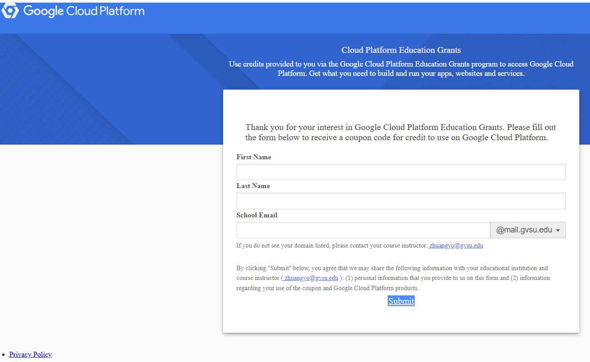
Fig. 1 Education credit invitation form.#
Request and redeem the coupon by December 31, 2026. The course credits are valid through August 31, 2027, unless used up earlier. This redemption deadline is separate from the assignment due date in Blackboard.
{kind=link}
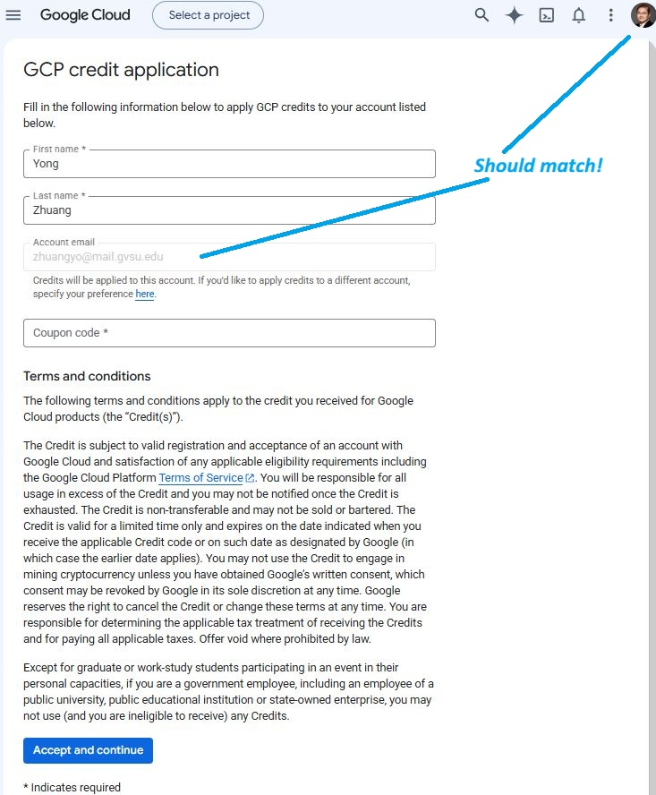
Fig. 2 Check which account will receive the credits before redeeming your coupon.#
Confirm your credits#
Open the Google Cloud Console, search for Billing, and select the course billing account. Open Credits and confirm that your course credit is available, along with its remaining value and expiration.
{kind=link}
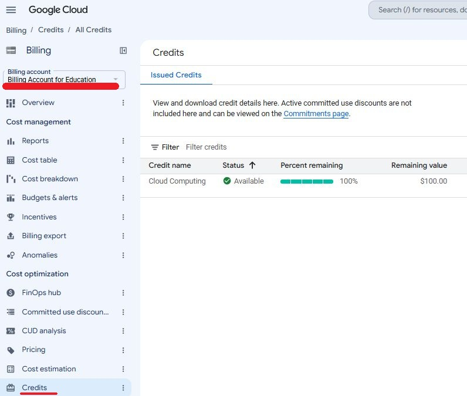
Fig. 3 This example shows $100. Your student coupon provides $50; your remaining balance will decrease as credits are used.#
Important
Use the instructor-provided course credits. Do not enter a personal credit card or activate a separate paid account for this lab. If credits are missing, exhausted, or setup asks for payment information, contact the instructor before proceeding. Dismiss a separate free-trial promotion when using course credits.
Checkpoint 1 — Course credits
Capture the credit status and record its expiration date. Exclude coupon codes, payment details, and billing account numbers from your submission.
3. Create or select your course project#
Locate the project selector, search bar, Cloud Shell button, and notifications. The project selector determines which project’s resources you are viewing. Cloud Shell opens a command-line environment for managing Google Cloud. Later, you will open an SSH session on your VM, which is a different machine.
{kind=link}
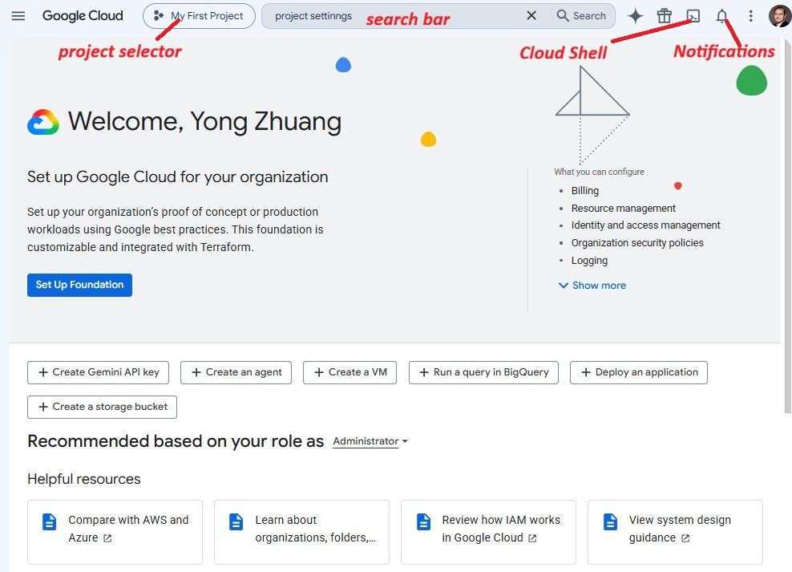
Fig. 4 Use the top bar to select your project and search for services or settings.#
Create or select a project#
Before linking billing, you need a project to hold your course resources. Do not assume that redeeming your education coupon creates one automatically.
Open the project selector at the top of the console. If you already have an unused project for this course (for example, My First Project), select it and continue to Link your project to billing below. Otherwise, create one:
Search for Manage resources in the console and open it.
Select Create project.
Enter
YourLastName-CloudAppDevas the project name, replacingYourLastNamewith your last name. Keep the automatically generated Project ID and record it for your submission.If a billing account field appears, select the education billing account containing your course credits.
If asked for an organization or location, choose No organization when available, unless the instructor has specified a location. If your university account requires an organization or you lack permission to create a project, contact the instructor for help.
Select Create, wait for completion, then select the new project in the project selector.
See Google’s project creation guide if you need help locating these controls.
Link your project to billing#
With your course project selected, open Billing. If it has no billing account, choose Link a billing account, select the education billing account containing your credits, and save. If billing is already linked, verify that it is the education account containing your course credits.
{kind=link}
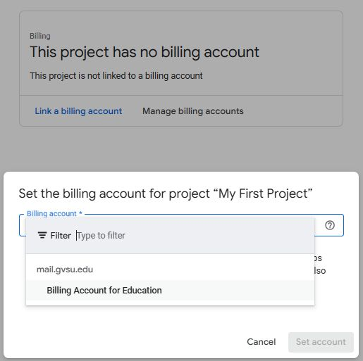
Fig. 5 Link your course project to the billing account containing your education credits.#
Verify or update your project name#
If you created the project with the name above, simply verify it here. If you reused an existing project, rename it now.
Search for Project settings, or open IAM & Admin → Settings. Set the
project display name to YourLastName-CloudAppDev, replacing YourLastName
with your last name, and select Save.
{kind=link}
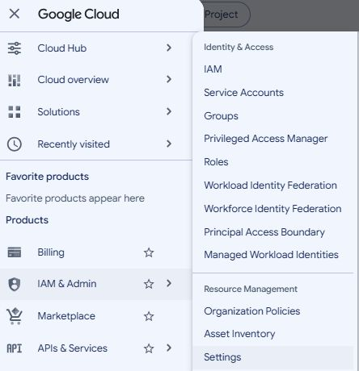
Fig. 6 Open Settings to edit the project display name.#
{kind=link}
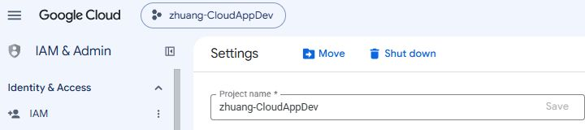
Fig. 7 Replace the example name with your own last name followed by CloudAppDev.#
Verify the updated name in the project selector. The project ID is separate from the display name; renaming the project does not change its ID. Confirm once more that the selected project uses your course billing account.
Checkpoint 2 — Project setup
Capture the project settings showing its display name and project ID. In one sentence, explain how a project relates to a billing account.
4. Create an Ubuntu virtual machine#
A virtual machine (VM) is a computer running in the cloud that you can access remotely. Let’s create a small Ubuntu VM for your web server.
Open Compute Engine#
Search for Compute Engine. If prompted, enable the Compute Engine API and wait for initialization.
{kind=link}
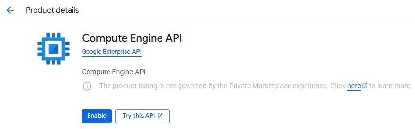
Fig. 8 Enable the API if it is not already enabled in your project.#
Open VM instances and select Create instance.
{kind=link}
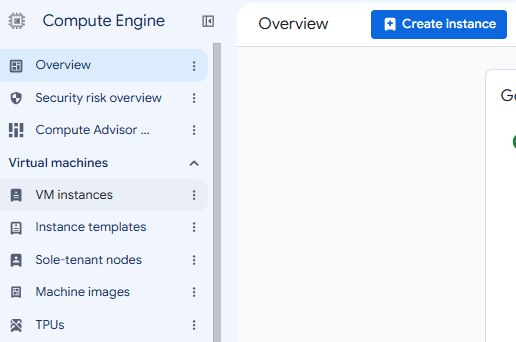
Fig. 9 Create a VM from the VM instances page.#
Choose the VM settings#
Use the following settings. Replace yourlastname with your last name in
lowercase; for example, zhuang-cc-microinstance-1. Use lowercase letters,
numbers, and hyphens in the VM name, with no spaces or angle brackets.
Setting |
Choose |
|---|---|
Name |
|
Region |
|
Zone |
Any available zone in |
Machine series |
General purpose → E2 |
Machine type |
|
Provisioning model |
Standard |
Operating system |
Ubuntu 24.04 LTS, x86/64; standard image, not Minimal or Pro |
Boot disk type and size |
Standard persistent disk ( |
Networking |
Default VPC with an ephemeral external IPv4 address |
Firewall |
Allow HTTP traffic |
Explore how machine types affect the cost estimate, then return to e2-micro before creating the VM. Larger machines consume credits more quickly.
{kind=link}
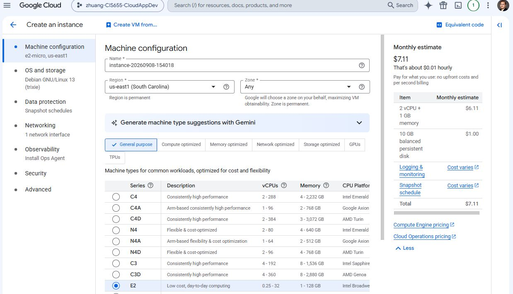
Fig. 10 Enter your VM name, select us-east1, and choose the E2 series.#
{kind=link}
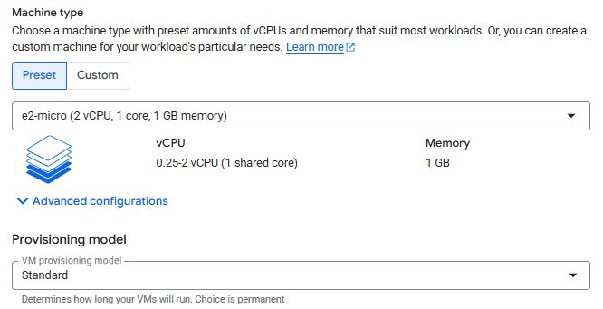
Fig. 11 Select e2-micro and the Standard provisioning model.#
Under OS and storage, select Change to configure the boot disk.
{kind=link}
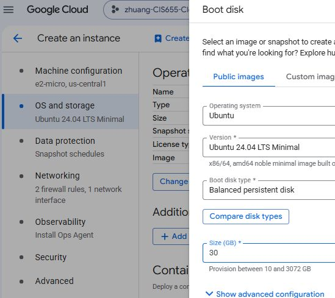
Fig. 12 This screenshot locates the disk settings, but shows Minimal Ubuntu and a balanced disk. For this assignment, choose standard Ubuntu 24.04 LTS and a Standard persistent disk, with a size of 30 GB.#
Under Networking, select Allow HTTP traffic so your browser can reach Apache on TCP port 80.
{kind=link}
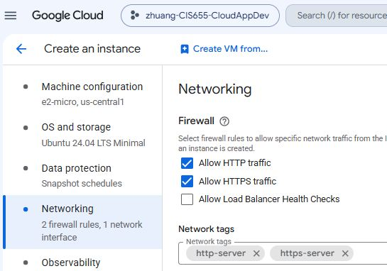
Fig. 13 Enable HTTP traffic. HTTPS is also checked in the example, but is not required for this lab; opening port 443 does not configure HTTPS on your server.#
Important
Free Tier usage has limits. An eligible e2-micro VM and standard persistent disk can qualify, but additional resources and usage can consume course credits. Do not assume the whole setup can run indefinitely at no cost. Review the current Free Tier limits and the cost estimate before creating the VM.
Select Create and wait for the VM to show a running status. If the default VPC is unavailable or a policy blocks creation, contact the instructor with the error message.
{kind=link}
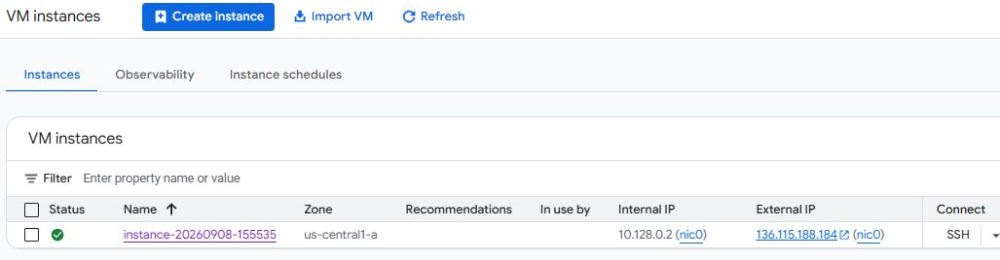
Fig. 14 Find your running VM and its SSH button. Your name, zone, and IP addresses will differ from this example.#
Green status indicator: The VM is running.
Internal IP: Used to communicate within the cloud network.
External IP: Used to reach your web server from the internet. An ephemeral address can change after stopping and restarting the VM.
SSH: Opens a browser-based terminal connected to the VM.
Checkpoint 3 — Virtual machine
Capture the VM name, region/zone, machine type, boot disk configuration, and running status. Use more than one screenshot if needed. Explain the difference between its internal and external IP addresses.
5. Connect and install Apache#
Time to host a website! Click SSH next to your VM. If you are new to Linux, follow the commands below one at a time.
{kind=link}
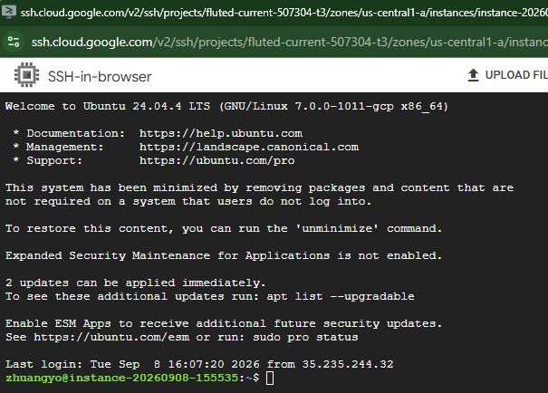
Fig. 15 Run the commands in your VM’s SSH terminal. The example shows a Minimal image; your standard Ubuntu welcome message may differ.#
The $ marks the shell prompt; do not type it as part of a command. The toolbar
includes settings and file-transfer controls.
Install and start Apache#
Refresh the package list, then install Apache. Confirm installation if prompted.
sudo apt update
sudo apt install apache2
sudoruns a command with administrator privileges.aptmanages software packages;updaterefreshes the package list.install apache2installs Apache and its dependencies.
Start Apache and enable it to run automatically when the VM boots:
sudo systemctl enable --now apache2
systemctl is-active apache2
systemctl manages services. The final command should print active.
Check the VM firewall#
Google Cloud’s VPC firewall and Ubuntu’s firewall are separate. The Allow HTTP traffic setting from Step 4 permits HTTP through the cloud firewall.
If UFW is not installed, install it, then check its status:
sudo apt install -y ufw
sudo ufw status
If UFW is active, allow SSH and HTTP:
sudo ufw allow 22/tcp
sudo ufw allow 80/tcp
If it is inactive, leave it inactive for this lab. Adding UFW rules alone does not enable UFW, and these rules do not replace the Google Cloud firewall setting.
Open your web page#
In a new browser tab, enter http://EXTERNAL_IP, replacing EXTERNAL_IP with
your VM’s current external IP address. You should see Apache’s default page.
{kind=link}
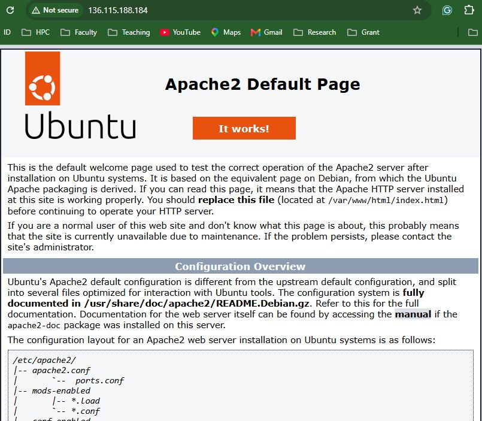
Fig. 16 A successful HTTP response displays Apache’s default page. Use your VM’s address, not the address in the screenshot.#
Your web server is now running! This lab uses HTTP, not HTTPS; you have not configured a TLS certificate.
If the page does not load, check that:
The VM is running and the URL uses its current external IP.
The URL starts with
http://, and the browser has not changed it to HTTPS.Apache reports
active.Allow HTTP traffic is selected for the VM and TCP port 80 is allowed by its VPC firewall rule.
UFW allows TCP port 80 if UFW is active.
For more detail, see Google’s Apache web server guide.
Checkpoint 4 — Web server
Capture the Apache default page with its HTTP address visible and the terminal output showing that Apache is active.
6. Configure instructor access#
Grant the instructor access to your course project so they can inspect its configuration and help troubleshoot problems. Use the instructor’s Google account address supplied for this course; ask if you have not received it.
Select your Cloud Computing project and open IAM & Admin → IAM.
Select Grant access and enter the instructor’s Google account address.
Select Owner under the basic project roles, then select Save.
Verify that the instructor appears with the Owner role.
Owner grants broad control of this project. Apply this course support setup only to your course project, and grant access only to the intended instructor.
{kind=link}
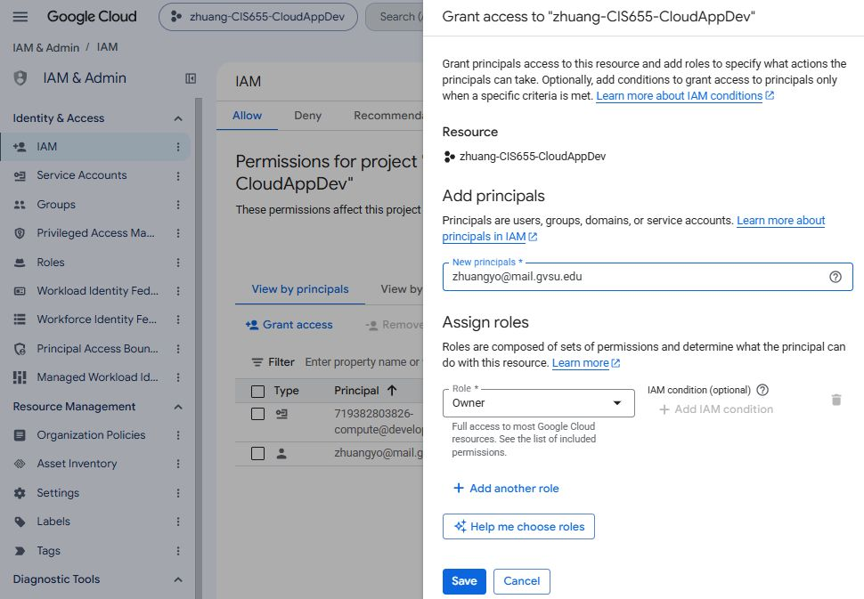
Fig. 17 Check the selected project, instructor account, and Owner role before saving.#
Checkpoint 5 — Instructor access
Capture the course project’s IAM entry showing the instructor and assigned role. Explain why project access should only be given to intended collaborators.
7. Submit your assignment#
Congratulations—you have configured a cloud project and deployed a web server! Submit one document to the Assignment 1 entry in Blackboard. Organize it using the following checklist:
Item |
Include |
|---|---|
Identification |
Your name and project display name |
Checkpoint 1 |
Credit status screenshot and expiration date |
Checkpoint 2 |
Project settings screenshot and billing explanation |
Checkpoint 3 |
VM configuration screenshots and IP address explanation |
Checkpoint 4 |
Apache page screenshot, HTTP URL, and active service output |
Checkpoint 5 |
Instructor IAM entry screenshot and access explanation |
Reflection |
An issue you encountered and how you resolved it; if none, say so |
Make screenshots readable and label each checkpoint. Keep coupon codes, passwords, and payment details out of your submission. Check Blackboard for the deadline and any additional instructor directions.
After submitting#
Review your remaining credits and costs. Follow the instructor’s directions about keeping the VM running for grading and later labs. When it is no longer needed, stop it; disks and other retained resources can still incur charges. Remove resources only after the instructor confirms they are no longer required.
Optional: configure billing budget alerts to monitor consumption. Alerts do not automatically stop resources or cap spending.
For further exploration, visit the Resources page or browse Google Cloud products.